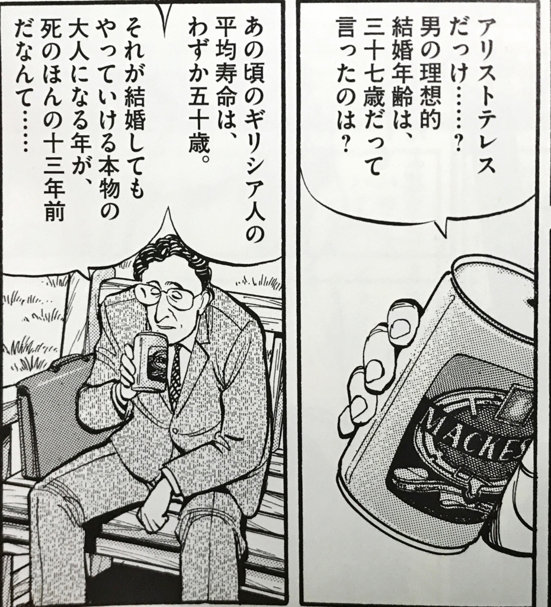
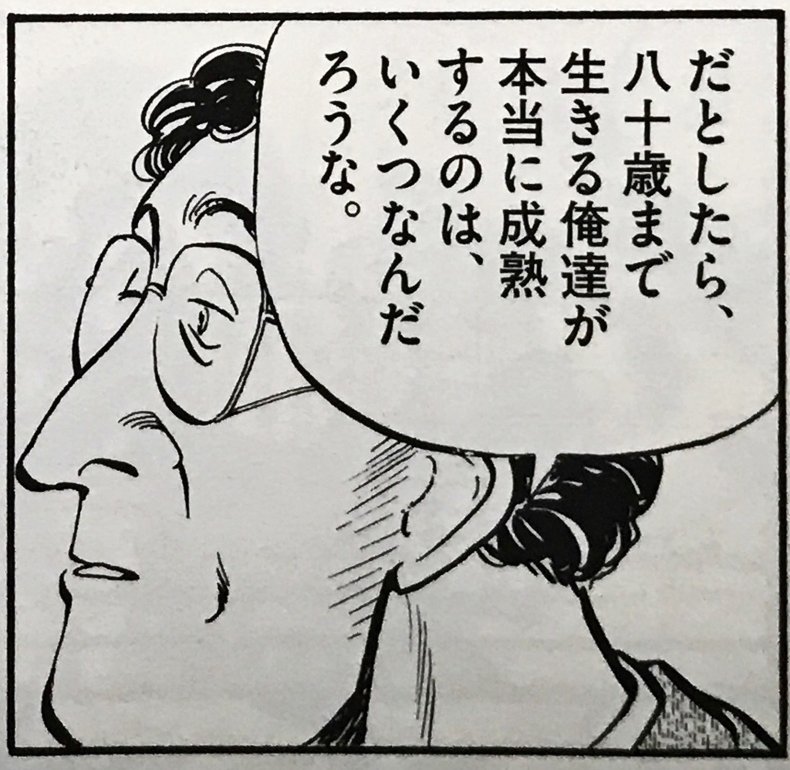
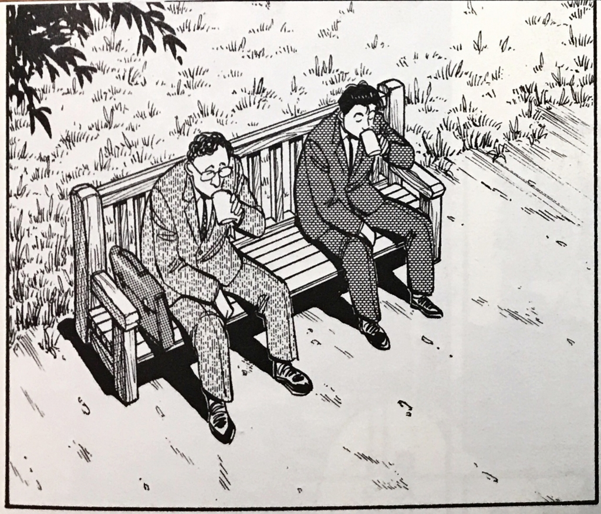

37歳になりました。
公開日：
37歳になりました。
「37」は、何の変哲もない数です。とくになにか区切りがいいだとか、節目になるだとか、そういう要素はまったくない。強いて言えば12番目の素数で、最小の非正則素数であることが一部の頭のおかしい（褒）数学徒を熱狂させる（ことがある）、という程度のものです。
しかし、個人的にはなんとなく看過しえない、そんな雰囲気を持つ数字でもあります。もしかすると『MASTERキートン』のとある話が思い出されるからかもしれません。


")
MASTERキートン 2 完全版 (ビッグコミックススペシャル)
- 作者: 浦沢直樹,勝鹿北星,長崎尚志
- 出版社/メーカー: 小学館
- 発売日: 2011/08/30
- メディア: コミック
- 購入: 1人 クリック: 200回
- この商品を含むブログ (37件) を見る
『ニコ倫』は途中までしか読んでないし、『政治学』は積んだままという怠惰な僕には、これの正確な出典がわからないのですが、37歳というのは、アリストテレスがプラトンを喪い、アカデメイアを去った年齢であることよくは知られています[要出典]。緊迫するオリエント情勢の中、もはや箱庭のようなアカデメイアに籠って研鑽に励むだけの甘えた日々を送る訳にはいかなくなったことを自覚し、見聞を広めんと決意した年齢なのかもしれません[知らんけど]。孔子の「而立・不惑」に重ねて理解するのが正しいのかはわかりませんが、あるいは転機になる年齢だったのではないかって想像しちゃいますよね。
それにしても、本当の大人って何なんだろう？
37歳ともなれば、自分がどのような人間で、何ができる人間なのかを否応なく自覚してしまうものです。自分の能力と可能性、そして残された時間から、“自分がどの程度の人間で終わるのか”がなんとなく見えてきてしまい、そろそろそれを受け入れなければならない。勤め人でいえば「係長どまりかな、部長になれたら大成功だ」とか。そういうのと折り合いをつけて、諦めるところは諦めながら、これからの生を充足させる必要がある。
無論、「そんなの認めない！」っていう人生にもちょっと憧れますけどね。「そんなこと考えたくない、今やれることだけをやるだけだ」と仕事なんかに打ち込むのももちろんアリでしょう（過労には注意しろよな！）。
まぁ、生き方はいろいろなのだけど、同年代の友人をそれとなく観察するに、「生の限界」（要するに“しょうもない人間のまま死ぬ”ってこと）と向き合いつつも、自棄にならず、淡々と社会的立場をまっとうする、というのが「本当の大人」の在り方らしい（逆に、それに倦んだり、自棄になった人は、犯罪とかして社会を壊そうとする）。
ごく若い頃はそういう生き方に少し疑問も持っていたのだけど、最近ではそんな色々と制限のある中でいかに自由の翼を広げるのか、楽しく生きるのかを実践している人たちに割と羨望を感じたりもするのです。要するに、頑張ってちゃんと子どもを育てている人な。
自分が、結婚はともかく、「子どもがいるのうらやましいなー」と思うのも、自分ができそうもないことを次世代に達成してほしい、その役に立てたら自分が無駄ではないように感じられる、というのがある気がします。「自分にできないことを子どもに成し遂げてほしい」なんて虫のいいお願いと思われるかもしれませんが、別にそういうことを望んでいるのではなく、単に「自分の得たいくばくかの知識・経験（黒歴史）を継承し、それを活かして成長する次世代がみたい」という程度の意味です（じゃないと、俺は単に黒歴史まみれになっただけじゃないか！！）。“近代知識と記憶はそのまま、中世っぽい世界に転生して無双する”というチート系異世界転生、あれのできそこないをやる主人公をそっと見守るポジションにつきたい――みたいな。
あと、子育てをする人はみんな「大人」な感じがする。きっと毎日が大変ななかで、得るものも多いのだろうなぁ。自分が“そっと見守るポジション”など甘いことを言っているその瞬間でさえも、きっと実践的な学び（ex. おむつを取り換えることによって得られる生物学的知見、異種生命体とのコミュニケーション手法に関する研究、子育て支援に関する政治的考察）を得ているんでしょうね。周りが相互フィードバックによる爆発的成長を遂げる中、自分だけが置いて行かれているような、そういう寂しい気持ちも感じたりします。
とはいえ、プラクシスとポイエーシスの賜物と格闘する“常在戦場”な友人たちが羽を伸ばすダシに自分を呼んでくれるのは結構うれしいものだし（あいつら、自分の家では「俺は家族を優先したいんだが、やなぎが久しぶりに遊ぼうと五月蠅いから」だなんて言い訳をするらしいぞ！ こんちくしょうめ！）、好きな本を読み、毎日12時間寝て、たまにふらっと出かける今の生活も正直捨てがたい。
さんざん反省っぽいことを言っておいてなんだけど、とりあえずはこの調子で何年かフリーダムに暮らすことになるんだろうなーなんて思っています。ゆっくり萎んでいく社会の再生産に何ら寄与しないまま、成熟しない・テオーリアから足を踏み出せない・頭でっかちでフリーライドな大人のままにね。

追伸
![「イワチュウ] 岩鋳 南部鉄器 フライパン オムレット ２４cm IH対応](https://images-fe.ssl-images-amazon.com/images/I/31PwCfh5%2BmL._SL160_.jpg "「イワチュウ] 岩鋳 南部鉄器 フライパン オムレット ２４cm IH対応")
「イワチュウ] 岩鋳 南部鉄器 フライパン オムレット ２４cm IH対応
- 出版社/メーカー: 岩鋳
- メディア: ホーム&キッチン
- クリック: 31回
- この商品を含むブログを見る
関係ないけど、自分の誕生日プレゼントにオムレツを焼くためのフライパンを買いました！ 中華鍋をもらってからちょっとハマってるんですよね、鉄鍋（たしか、去年か、その前の誕生日に買ってもらったんだっけ……ありがとう！）。
オイルポットも発注し（もっと早く買えばよかったぜ……）、これで自炊生活のクオリティがまた高まってしまう！ いつもは卵2個でやってるんだけど、誕生日ぐらいは3個、4個使ってオムレツ作るのもありだよな……(；ﾟдﾟ)ｺﾞｸﾘ